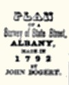
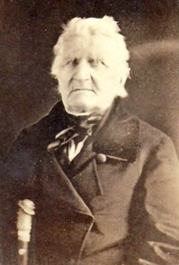

by
Stefan Bielinski
John Bogert was born in September 1761. He was the eldest son of skipper and surveyor Hendrick Bogert and Barbara Marselis Bogert. He grew up along the waterfront learning the riverman's craft and also how to draft maps from his father - the city surveyor.
*At the outbreak of the war, fifteen year old John Bogert was drafted out of the Albany militia to escort British prisoners taken at St. Johns' to Kingston and then on to Pennsylvania. The next year, he was a sailor on his father's sloop, the Magdeline helping transport stores and supplies on the Hudson for the Continental army. In 1777, he took over for his father as skipper. The Magdeline carried companies of soldiers between Albany and Fishkill and hauled provisions, wood, and military stores as well. Later he conducted the wife of a British officer, a French priest, and others to New York under a flag of truce. Bogert's pension application details his services, which continued on the river and on land during the winter thru the end of the war. Although appearing on local muster rolls, this able teenager was valuable enough to be exempted from military service on a number of occasions.
By the time he came of age at the end of the war, John Bogert was an experienced Hudson River skipper. Perhaps first living in his father's first ward household, he began to take part in civic activities serving as chimney viewer and fireman. Later he would be elected alderman, supervisor, and then chamberlain or treasurer. He also retained his milita commission for a number of years.
 In 1784, he married the slightly older Kingston native Catherine Ten Broeck. She died in 1792 after bearing at least four Bogert children, only one of whom seem to have been christened in the Albany church.
In April 1796 or '97, he married Christina Vaught/Vought of Duanesburgh, by way of Nova Scotia and before that a native of New Jersey, in the Schenectady Dutch church. That marriage produced six more children who were baptized in the Albany Dutch church where he was a member and officer.
In 1788, the third ward home of "John Bogert" was valued on the city assessment roll. However, his name was absent from the first federal census taken just two years later. Perhaps, he was living in the Kingston home of his father-in-law or was one of the three men counted in his father's Southside household.
By the 1790s, he had succeeded his father as city surveyor. His tenure produced a number of maps that structured and documented the growth of booming American city he would witness over the next six decades.
In 1797, a great fire destroyed his home and outbuildings on Water Vliet Street. After that, he made his home on the south side of the city.
In 1799, Capt. John Bogert was carrying items between New York and Albany. However, he is often confused with a more prominent John Bogert of New York City.
By 1800, he had become head of his own Albany household located next door and south of the city hall. He sold millstones. Community leader and still known as a sloop captain, John Bogert was a fixture at 218 then 658 South Market Street (later 177 Broadway) for several decades. He was employed as a clerk at the Mechanics & Farmers Bank.
In 1830, he was listed in the city directory as "measurer of wood" (one of three individuals holding that title) with a living address of 658 South Market Street.
His second wife, Christina, died in 1836. The census of 1850 configured his household on "Broadway" with his daughters, Sarah (age 60) and Mary (age 48), grandson Dr. Henry B. Fay (a physician age 28), John Bogert (age 16), Eliza Van Vechten (age 58), and Catherine Beringer (a native of Germany - age 32). John Bogert was listed as the head of the household at the age of eighty-nine.
Captain John Bogert died in May 1853 at the age of ninety-two. He was reputed to be the oldest man in Albany and the "last of the old Dutch skippers" on the Hudson River. He was interred in the new Albany Rural Cemetery.
Because of his longevity (living into his nineties and into the mid-nineteenth century), long-time prominence, and particularly because of his intensive service during the War for Independence, we are blessed with ample resources to be able to say much more about his remarkable life. He remains one of my favorite historical characters. Stay tuned!
notes
*Excerpt from an unpublished manuscript entitled "River People in Early Albany." Maps: We hope to include an inventory of his city maps in the future!
A portrait attributed to Ezra Ames and painted about 1812 is noted but could be located by the authors of Ezra Ames, p. 210. Carte-de-visage of a much older John Bogert from a private collection. We hope to add more on this image in the future.
" Death of Capt. John Bogart -- This venerable, respectable and well known citizen expired at his residence in this city Sunday afternoon. He had reached the great age of 92 yrs. and was the oldest male citizen in Albany. Captain Bogart was born in this city and resided here all his long life. More than a half century in the house in which he died. He was one of the last of the old "Dutch Skippers" of the Hudson River." An excerpt from a longer obituary printed in Annals, volume 5, p 329. Grammar and punctuation modernized. Sources: The long life of John Bogert is CAP biography number 6121. This profile is derived chiefly from family and community-based resources. We are indebted to Research Associate Jan Ghee for adopting Captain Bogert as a personal research topic and unearthing an impressive cache of materials that enable us to know more about his long life.
Sources: The long life of John Bogert is CAP biography number 6121. This profile is derived chiefly from family and community-based resources. We are indebted to Research Associate Jan Ghee for adopting Captain Bogert as a personal research topic and unearthing an impressive cache of materials that enable us to know more about his long life.
first posted 10/25/03; last updated 1/29/13